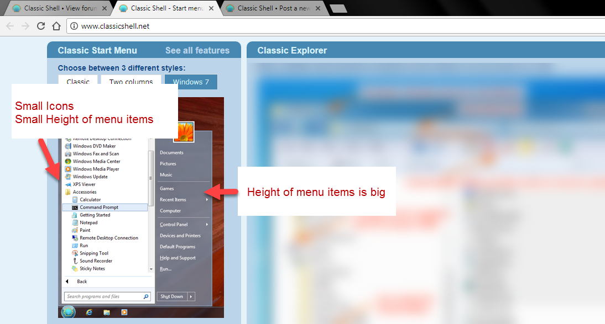

Hi guys,
I have installed the Classic Shell on Windows Server 2016 (x64) (due to its pathetically slow and unproductive start menu) and found that when I select "Small Icons" under Skin Tab in settings window, the buttons on the right hand column also reduce their height.
I believe this setting should only reduce the height of items on the left hand column.
This behavior is different from what is advertised on the website.

This is the first time I'm using Classic Shell so I don't know if this is the default behavior.
Or am I missing some setting ?
Thanks.